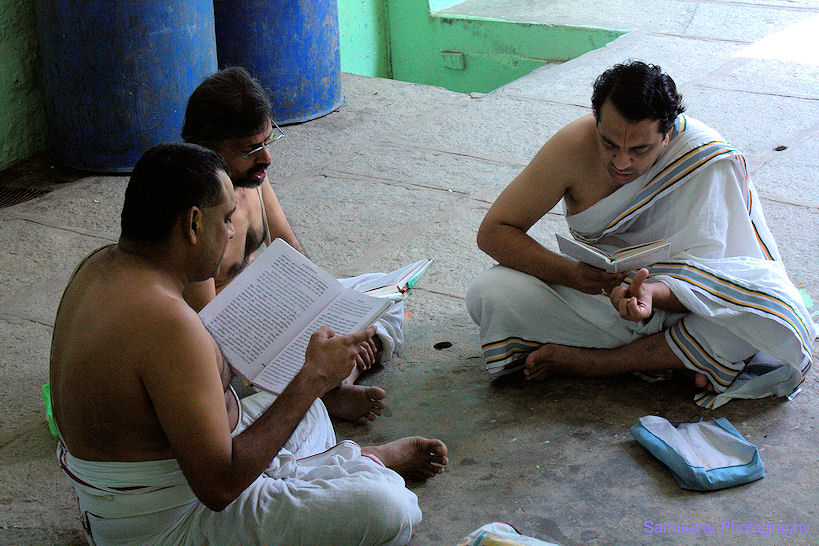
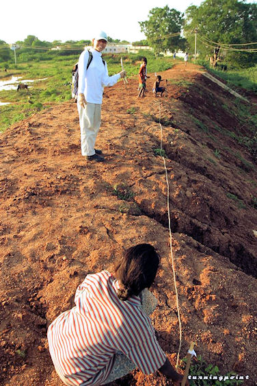

mailto:payer@payer.de
Zitierweise | cite as:
Payer, Alois <1944 - >: Sanskritkurs. -- 35. Lektion 35. -- Fassung vom 2009-01-06. -- URL: http://www.payer.de/sanskritkurs/lektion35.htm
Erstmals hier publiziert: 2008-12-28
Überarbeitungen: 2009-01-06 [Verbesserungen]
Anlass: Lehrveranstaltungen 1980 - 1984
©opyright: Dieser Text steht der Allgemeinheit zur Verfügung. Eine Verwertung in Publikationen, die über übliche Zitate hinausgeht, bedarf der ausdrücklichen Genehmigung des Verfassers
Dieser Text ist Teil der Abteilung Sanskrit von Tüpfli's Global Village Library
Falls Sie die diakritischen Zeichen nicht dargestellt bekommen, installieren Sie eine Schrift mit Diakritika wie z.B. Tahoma.
Die Devanāgarī-Zeichen sind in Unicode kodiert. Sie benötigen also eine Unicode-Devanāgarī-Schrift.
| Bildung: starker Stamm:
schwacher Stamm: siehe bei den Untertypen |
Bildung:
Wird gebildet von Wurzeln der Typen:
Vor vokalisch anlautender Endung wird ersetzt
|
Beispiele:
Wurzel 3.sg.Perf.P 3.pl.Perf.P 3.sg.Perf.Ā 3.pl.Perf.Ā इ 2P इयाय
iy-ai + aईयुर्
i + iy + urनी 1U निनाय निन्युर्
ni-nī + urनिन्ये निन्यिरे स्तु 2U तुष्टाव
tu + stau + aतुष्टुवुर्
tu + stuv-urतुष्टुवे तुष्टुविरे पू पुपाव
pu-pau + aपुपुवुर्
pu-puv-urपुपुवे पुपुविरे कृ चकार चक्रुर्
ca-kr-urचक्रे चक्रिरे
Bildung:
Wird gebildet von Wurzeln der Typen:
|
Beispiele:
Wurzel 3.sg.Perf.P 3.pl.Perf.P 3.sg.Perf.Ā 3.pl.Perf.Ā पॄ 3P पपार पपरुर् स्मृ 1P समार सस्मरुर् संस्कृ 8U सञ्चस्कार
sam + ca-skār-aसञ्चस्करुर् सञ्चस्करे सञ्चस्करिरे
Bildung:
Wird gebildet von Wurzeln auf -ā / -āi |
Beispiel:
Wurzel 3.sg.Perf.P
1.sg.Perf.P3.pl.Perf.P 3.sg.Perf.Ā 3.pl.Perf.Ā दा 3U ददौ 1 ददुर्
da-d-urददे ददिरे
da-d-i-re
1 die Form ददौ ist noch nicht befriedigend erklärt (siehe Thumb-Hauschild 1,2 S. 290ff.)
Bildung:
Wird gebildet von Wurzeln des Typs (Konsonant)-Konsonant-a-Konsonant |
Bildung
Wird gebildet u.a. von den Wurzeln:
|
Beispiele:
Wurzel 3.sg.Perf.P 3.pl.Perf.P 3.sg.Perf.Ā 3.pl.Perf.Ā गम् 1P जगाम जग्मुर्
ja-gm-urहन् 2P जघान
ja-ghān-aजघ्नुर् जन् 4Ā जज्ञे
ja-jñ-eजज्ञिरे वच् 2P उवाच ऊचुर्
u +ucurवद् 1P उवाद ऊदुर् <उदे> <उदिरे> यज् 1U इयाज ईजुर्
i + ij-urईजे ईजिरे
Bildung:
Wird gebildet von Wurzeln mit -a- zwischen zwei einfachen Konsonanten, deren Anfangskonsonant in der Reduplikationssilbe nicht verändert wird (d.h. deren Anfangskonsonant kein Guttural, Aspirat oder h ist) |
Beispiel:
Wurzel 3.sg.Perf.P 3.pl.Perf.P 3.sg.Perf.Ā 3.pl.Perf.Ā पव् 1U पपाच पेचुर् पेचे पेचिरे
Bildung:
Wird gebildet von allen anderen Wurzeln mit mittlerem -a-, d.h. Wurzeln mit mittlerem -a-
sofern sie nicht zu Perfekt Typ Va gehören. |
Beispiel:
Wurzel 3.sg.Perf.P 3.pl.Perf.P 3.sg.Perf.Ā 3.pl.Perf.Ā क्रम् 1U चक्राम चक्रमुर् चक्रमे चक्रमिरे
नश् 4P नश्यति : verloren gehen, zugrundegehen, verschwinden
Perf. Vb ननाश, नेशुर्
Fut. नशिष्यति । नङ्क्ष्यति
Kaus. नाशयति
PPP नष्ट
नश् + प्र 4P प्रणश्यति : verschwinden, verloren gehen, zugrundegehen
क्रम् 1U क्रामति, 4P क्राम्यति : schreiten, gehen
Perf. Vc चक्राम, चक्रमुर्
Fut. क्रमिष्यति
Pass. क्रम्यते
Kaus. क्रमयति
PPP क्रान्त
Inf. क्रमितुम्
Kaus. क्रमित्वा । क्रन्त्वा । क्रान्त्वा
Abb.: क्रामन्ति
[Bildquelle: Curt Carnemark / World Bank. --
http://www.flickr.com/photos/worldbank/2182732473/. -- Zugriff am
2008-12-28. --


 Creative
Commons Lizenz (Namensnennung, keine kommerzielle Nutzung, keine Bearbeitung)]
Creative
Commons Lizenz (Namensnennung, keine kommerzielle Nutzung, keine Bearbeitung)]
गै 1P यायति (gai + a-ti): singen, in singendem Ton rezitieren, in gebundener Rede verkünden
Perf. IV जगौ, जगुर्
Fut. गास्यति
Pass. गीयते
Kaus. गापयति
PPP गीत
Inf. गातुम्davon:
गीता f.: Lied Gesang

Abb.: जगुः
Kaadu Malleswara Temple, Bangalore = ಬೆಂಗಳೂರು
[Bildquelle: Samuelraj @. -- http://www.flickr.com/photos/samuelraj/2946969732/. -- Zugriff am 2008-12-28. --Creative Commons Lizenz (Namensnennung, keine kommerzielle Nutzung)]
A) Bilden Sie zu den folgenden Verbformen die entsprechenden Perfektformen:
मिमते 
Abb.: मिमते
Vadaseri
[Bildquelle: kifo. --
http://www.flickr.com/photos/turningpoint/2365474/.
-- Zugriff am 2008-12-28. --

 Creative
Commons Lizenz (Namensnennung, share alike)]
Creative
Commons Lizenz (Namensnennung, share alike)]
B) Übersetzen Sie:
एकस्मिन्नेव काले क्षत्रियो महान्यष्टु्मुपचक्रमे । तस्य यज्ञपशुमिन्द्रो जहार । प्रनष्टे तु पशौ दुर्ब्राह्मणः क्षत्रियमब्रवीत् । पशुर्हृतः क्षत्रियस्य दुर्नयादिति ॥१॥
रामो ऽपुत्र आस । स पुत्रमियेष न तु लेभे । तस्माद्देवानीजे ब्रह्मचर्यादिव्रतानि च चकार । देवा रामस्येष्टिं शुश्रुवू रामाय चेष्टपुत्रं ददुः ॥२॥
ब्राह्मण्यो यज्ञाय घृतं पेचुः । ब्राह्मणीषु पचन्तीषु ब्राह्मणा यज्ञस्थानं सञ्चस्करुः । ततः क्षत्रियाः शिवादिदेवानीजिरे ब्राह्मणाश्चेजुः ॥३॥
Abb.: ...
ब्राह्मणाश्चेजुः
यज्ञ, Shiva ashram, Kothavala, Ganeshpuri,
80 km von Mumbai (मुंबई) entfernt
[Bildquelle: Dey. --
http://www.flickr.com/photos/dey/462784131/. -- Zugriff am 2008-12-28. --


 Creative
Comons Lizenz (Namensnennung, keine kommerzielle Nutzung, Share alike)]
Creative
Comons Lizenz (Namensnennung, keine kommerzielle Nutzung, Share alike)]
अर्हन्तः कुलबन्धनं बिभिदुर्लोभं च क्रोधं च मोहं च रुरुधुः सत्यं प्रजज्ञुर्दुःखान्मुक्ता मोक्षसुखमापुः ॥४॥
C) Wandeln Sie die Sätze der Übung B) um, indem Sie Perfekta durch Imperfekta ersetzen.
Zu Lektion 36